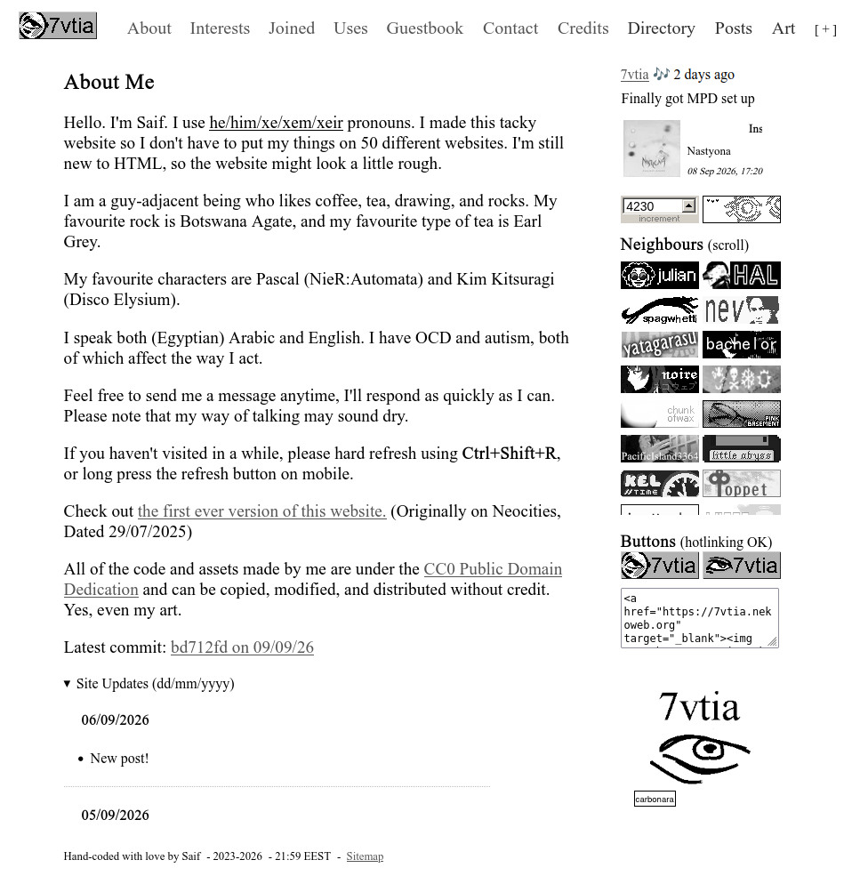
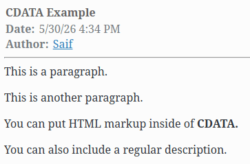
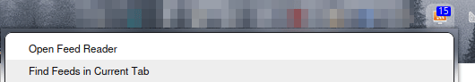
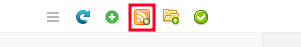
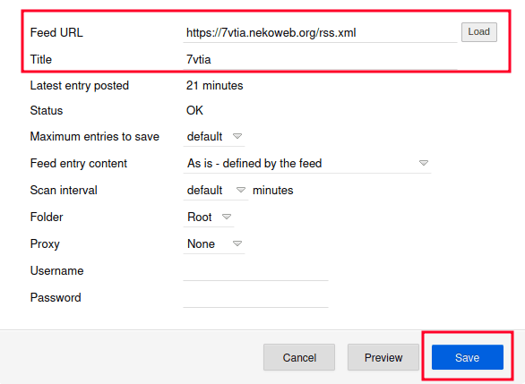
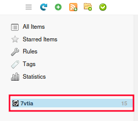

2026
Click on the titles to open/collapse any post. Permalinks are denoted by a hashtag (#).
Pinned: Atom, Cold Brew (Tea), RSS
Various Recipes
#
Posted
- Sweetened Condensed Milk
- Brown Sugar
- Simple Syrup
- Brown Sugar Cinnamon Syrup
- Chocolate Syrup
- Pancakes
- Cold Brew Coffee and Tea
Sweetened Condensed Milk
Ingredients
- 1 cup powdered milk
- 2/3 cup sugar
- 2 tbsp melted butter
- 1/3 cup boiling water
Add all of the ingredients and mix until smooth, wait for it to cool down completely and refrigerate. This should last about one week.
You can also make coffee creamer with this, but I haven't made a big enough batch to test this yet.
Brown Sugar
Ingredients
- 1 cup white sugar
- 1 tbsp molasses
In a bowl, add your sugar and molasses and then knead everything in until you can see that there aren't any spots of white sugar left. (I recommend wearing gloves for this.)
For every cup of white sugar, add an extra tablespoon of molasses. You can add two tablespoons of molasses for each cup of sugar if you like your brown sugar to be extra dark.
You can store this in any jar and leave it on the counter, and it'll last as long as you'd like. If it dries out, you can leave an apple slice or a marshmallow inside the jar for the sugar to regain moisture.
If none of these options are available, you can use it to make simple syrup as I've detailed below.
Simple Syrup
Ingredients
- 1 cup sugar
- 1 cup boiling water
In a heat-proof container, all of your ingredients and mix until the sugar is completely melted. The trick is to use equal amounts of sugar and water, you can also a 2:1 ratio of sugar to water if you'd like.
If you'd like to make this into vanilla syrup, you can add a tablespoon of vanilla extract and a pinch of salt to enhance the flavour. You can also use brown sugar to make brown sugar syrup!
This should last in the fridge for 2 weeks (or even more!), but look out for any bacterial growth just in case. Syrups made with the 2:1 ratio should last longer in the fridge due to there being more sugar.
Brown Sugar Cinnamon Syrup
Ingredients
- 1 cup brown sugar
- 1 cup water
- 1.5 tsp cinnamon powder
- 1 tsp vanilla extract
- a pinch of salt
In a pot, add your brown sugar, water, and cinnamon powder to a pot on medium heat, and whisk continuously until everything comes to a boil.
Once the mixture begins to boil, turn down the heat, add your pinch of salt, let everything simmer for 2 minutes, and then turn off the heat.
Once everything is cooled down, add your vanilla extract and you're done! This should last 2 or more weeks in the fridge.
Chocolate Syrup
Ingredients
- 1/2 cup brownsugar
- 1/2 cup water
- 1/4 cup cocoa powder
- 1/2 tsp vanilla extract
- a pinch of salt
In a pot on medium-high heat, add all of your ingredients and whisk continuously until everything comes to a boil.
Once the mixture begins to boil, turn down the heat and leave everything to simmer for 2 minutes, (make sure to not let it boil over!) take it off the heat, and let everything cool down.
This should last 2 or more weeks in the fridge.
Pancakes
Ingredients
- 2 eggs
- 1 cup milk
- 2 tsp vanilla extract
- 4 tbsp ghee (or melted butter)
- 2 tbsp sugar
- a pinch of salt
- 1 1/4 cup flour
- 1 1/2 tsp baking powder
Disclaimer: I like flat, chewy pancakes, so please be aware of that before you try out this recipe.
In a large bowl, sift in your flour and baking powder, and then add your sugar and a pinch of salt.
In a separate bowl, crack in two eggs, and lightly beat them. Then add your milk and vanilla extract and mix until well-combined.
In a small pan, melt your butter and then add it onto your wet ingredients. The extra butter left on the pan will be used for your first pancake.
If you find your batter to be too thick, you can mix in one tablespoon of milk at a time until it's the right consistency once again.
Pour your wet ingredients onto your dry ingredients. Whisk everything until it's only just combined and your batter is done! Your batter should be a bit lumpy while also not having any small pockets of flour, which is why you should use a sifter.
Back to your small pan, put it on medium-low heat, and wait until the pan is hot. You can see if your pan is hot by dipping a fork into the batter and then seeing if the butter immediately starts sizzling once you put it to the pan.
Pour your batter in. Once you see bubbles start to form and pop everywhere on the top of your batter, you can flip the pancake.
Make sure to press down on all sides so your pancake is cooked fully on the other side, and then transfer your pancake to a plate. Repeat this until all of the batter is gone, while making sure to butter your pan if you feel that it's gone dry (unless you have a non-stick pan.)
Don't worry about your first pancake looking weird, because that will always happen.
Once you're done, you can put whatever you want on your pancakes. I personally like to pour honey on my pancakes. Enjoy!
Cold Brew
There isn't really one true recipe for making cold brew tea or coffee, so think of these as… suggestions?
Coffee
For coffee, you need coarse water and coffee grounds. I really recommend taking out a kitchen scale, because the method I use requires you to weigh your coffee grounds in grams and then multiplying your amount by 8, or in simpler terms, using a 1:8 ratio.
For example, if I have 100 grams of coffee grounds, I'll use 800 milliliters of water to make my cold brew. This makes cold brew concentrate, which means you have to water it down once you're ready to drink it.
However much you dilute it (and what you dilute it with) completely depends on you. I usually do 3/4 cold brew and 1/4 milk for my drink. See what tastes good for you and what doesn't. You can also leave it undiluted…
To make cold brew coffee, simply mix your water and coffee grounds thoroughly, and then leave it on the counter overnight in a dry place that's away from the sun. Once it's done brewing, filter out the coffee grounds and put your cold brew in the fridge to avoid bacterial growth.
I recommend using a French press as it makes filtration a lot easier, if you don't have one, you can use a jar or anything with a lid to make your cold brew in.
You should try making your cold brew with limes if that's your thing. I really love cold brew with limes. Or you can add some lime juice to your cup.
Tea
For tea, it's basically the same except you substitute the coffee grounds for loose leaf tea or tea bags. For every tea bag (or 1 teaspoon of loose leaf tea) that you're going to use, add 250 milliliters of water. You can also use 2 tea bags (or 2 teaspoons) per 250 milliliters.
For black tea, I'd say the sweet spot is 8 hours or overnight. For green tea, I leave it for 4. Like with coffee, brew it on the counter while being very careful to avoid bacterial growth, and refrigerate immediately after filtering your tea.
Thankfully, this doesn't make concentrate, so you don't have to worry about diluting your drink. Try brewing your tea with fruits, also! I find Earl Grey with orange slices to be really tasty.
One Year of Posting
#
Posted
Today marks one year since I've started putting out posts on this website. I started out because I wanted to put my thoughts out somewhere, and while it was definitely scary to have people see these posts, I'm really glad I've come this far.
Since September 29th, 2025, I've made 22 posts here. Some I'm very proud of, and some that I wish I didn't make in the first place. While there'll probably be many more that I won't really enjoy looking at in the future, I'm looking forward to making many more posts in the coming months.
I'm also very proud to say that since I've written Journaling and This Website (which kind of makes my face shrivel up when I read it now,) I haven't been as scared to put myself out there nowadays. I don't think that all of my friendships are just some elaborate prank being done on me, and I've found myself enjoying talking to people a lot more now since I'm not stuck in this paranoia anymore.
Anyway, I hope to make more guides in the future, and I also still want to talk about my love for cold brew tea. Be on the lookout for that!
Colour Palettes
#
Posted
If you look at my website, you`ll see that most of it is just black text on a white background, with some grey links. It`s nice, but in my opinion it`s not what makes the site great.
What makes it great is the pops of colour. I have a greyscale class in my CSS that adds a greyscale filter to the element as you might`ve guessed.
But, I don`t put that on my entire website. Why? You can see for yourself.


Looks depressing, right? Hell, I might get so depressed from looking at this that I lose the will to finish writing this post.
First of all, I have a rule for my website that if I add someone else`s button, I`m not going to slap some filter on that sucks all the colour out. I want the original colours that the creator chose for their button.
Sure, the filter disappears on hover, but why? My life isn`t in greyscale. I like when the sea of black and white is broken by some vibrant colours. I`m not looking to make my website look like a doctor`s office.
The bigger issue to me is that I simply don`t enjoy it that much when everything must adhere to a specific colour palette. Before you say “But Saif, you exclusively draw in blue…” That`s because I`m too lazy to pick out a different colour, okay?
Don`t get me wrong, some people execute the whole limited colour palette thing extremely well. Other times, I`m begging to see something other than pink, or green, or whatever filter is on.
At the end of the day, you can choose whatever colour palette you want. Yellow text on a purple background, a website entirely made of rainbow gradients, who the hell cares? It`s your website. In my case, I find pops of colour much more enjoyable than your average fully-monochrome palette.
Atom #
Posted
Revised
Index
Okay, we're all done with RSS now (unless you haven't read my post about it yet.) How about we move to Atom?
What Is Atom?
Atom is, well, a web feed just like RSS. Almost every feed reader out there supports both Atom and RSS. Atom is also based on XML, just like RSS.
Some things are a little different though, like how Atom is able to support relative links, and pubDates—or “updated” dates in this case—are formatted differently.
Okay, but why use it?
At the end, it's a matter of personal choice, but I now think that you should use Atom over RSS.
It's much much harder to make breaking changes with Atom, it includes separate tags for summaries and full content, it can handle multiple languages, and it can handle relative links as I've said before.
You can also include multiple attachments (called enclosures) to your Atom feed, compared to RSS' one attachment limit.
The big issue is that Atom doesn't have nearly as much content about it as RSS, which I hope to remedy a little bit with this post.
Example Feed
<?xml version="1.0" encoding="utf-8"?>
<feed xmlns="http://www.w3.org/2005/Atom" xml:base="https://your-main-site.com/">
<title>feed title</title>
<subtitle>posts from your-website.com</subtitle>
<updated>2026-09-05T23:32:35Z</updated>
<author>
<name>your name</name>
<email>email@domain.com</email>
</author>
<id>tag:yourdomain,2026-09-05:/yourfeed.xml</id>
<link href="https://your-main-site.com/" rel="alternate"/>
<link href="link-to-your-feed.xml" rel="self" type="application/atom+xml"/>
<entry>
<id>tag:your-website.com,2026-09-05:/posts/yourpost.html</id>
<title>Title</title>
<updated>2026-09-05T02:57:00Z</updated>
<author>
<name>your name</name>
<email>email@domain.com</email>
</author>
<link rel="alternate" href="posts/yourpost.html"/>
<summary>Your post summary</summary>
<content type="html">
<![CDATA[
<p>The full content of your post, in the case an alternate link isn't included.</p>
]]>
</content>
</entry>
</feed>The example file can be found here.
I've taken the liberty of greying out everything that you can remove without getting your feed invalidated once again.
Okay, this seems a little difficult to navigate. Let's explain everything bit by bit.
You'll notice that at the way top, there's this
xml:base bit that links to your hypothetical
website. That's what allows for you to use relative links inside
of your feed.
If you're not going to use relative links, you can remove
xml:base and just use hyperlinks instead for
everything.
If you look below, specifically at
<link rel="alternate"
href="posts/yourpost.html"/>, you'll see said relative link.
In this example, the link will resolve to
https://your-main-site.com/posts/yourpost.html.
Something else you'll notice are the content and
summary tags I mentioned earlier. Both of them are
optional*, but if you don't include a link to your post in your
entry, you must add the content tag so people can still view
your post.
*I do recommend adding at least one of these. Nobody enjoys only looking at post titles on their reader.
The content, summary, and
title tags can include HTML, but you must include
type="html" in your opening tag like this:
<title type="html">
Your HTML must also be escaped (i.e. replacing < and > with their respective entities.) This isn't needed if you escape all of your HTML using CDATA, like in the example.
I know what you're thinking. “Saif, what the hell is that date format? And what's that thing in the id tags?” I'll start with the dates first.
Dates
Dates in Atom feeds must be in the
RFC 3339
format. I won't bore you with the details. The first half is a
regular old date in the order of yyyy-mm-dd.
The second half is the time. It starts with
T followed by the 24-hour time including seconds,
so if it's 6PM it'd be something like T18:00:00. At
the end is your timezone which is signified by the
Z. The default timezone is UTC, but if you'd like
another timezone you can replace the Z with the
offset (such as -05:00).
You can find your UTC offset in this wikipedia article.
IDs
The id is a tag: URI, one of the many ways you can
choose an ID for your feed or entry. But first, I'll show you
another (and much easier) way of making an ID:
urn:uuid:.
With this way, you can simply generate a v4 UUID and paste it in after the prefix. Here's what one looks like:
<id>urn:uuid:baf31027-73fe-4346-a68b-e23da535e0b3</id>
If you're comfortable using terminals, you can use
uuid -v4 to generate a UUID, if not, you can use an
online generator*.
*Use an adblocker! I sadly couldn't find one that is ad-free.
Unlike tag: URIs, this method can be used for both the feed and the entries inside it.
Back to the tag: URI, the example below is for entries specifically, and is rephrased from this page. I'll use this very post as my permalink URL.
- “Discard everything before the domain name.”
7vtia.nekoweb.org/posts/atom.html
- “Change all # characters to /”
No changes
- “Immediately after the domain name, insert a comma, then the year-month-day that the article was published, then a colon. Be sure to use a four-digit year, two-digit month, and two-digit day. Don't forget the colon.”
7vtia.nekoweb.org**,2026-06-09:**/posts/atom.html
-
“Add
tag:at the beginning. (Don't add slashes; it's just “tag:“. That's a common mistake.)”
tag:7vtia.nekoweb.org,2026-06-09:/posts/atom.html
The article also talks about the reason why you shouldn't use your permalink as your ID.
I used the same process for my feed ID. I took my main domain,
the (approximate) date I started “owning” it, and added
tag: at the beginning.
Feed Readers
The process for adding an Atom feed to your feed reader is the exact same as an RSS feed. You can view my post on RSS for more information.
Links
Here are some links if you want to read more on Atom feeds (or validate your feed.)
Please, Convert Your Files (properly)
#
Posted
A tragedy I've seen many times: Someone renames a .png file to a .jpg file, and they think that their file was magically converted. Suddenly, they get thrown an error because the file isn't actually a JPG.
This is because you're only changing the name of the file extension. Sure, it might say “.jpg” right there, but all of the data in your image is still that of a PNG.
I'll admit that I've done the same thing tons of times when I was still learning how to use a computer. This is why I implore you to use something like VERT to convert your files properly and save yourself the headache of trying to figure out why your image isn't working as it should.
Listography
#
Posted
Have you ever sighed wistfully to yourself and said, "Man, I sure wish I had a page that looked just like Listography"? Me neither.
If you've been here since the earlier days of my website, you probably remember when I had a lapse in aesthetics, and my interests page looked like a really ugly version of Listography.
Yesterday, I found the code for it on CodePen of all places..? and told myself: Why not make it *actually* look like a Listography page? I thought of it as a test to see how far my knowledge of HTML/CSS has gone.
Obviously, it doesn't look 100% like the actual website, because I've suffered enough while making it, but maybe I'll finish it one day. Maybe I'll even put the code on CodePen, LOL.
Anyway, enough rambling. The page can be found here:
listography.html
Do note that this looks really, really bad on mobile.
One Year of 7vtia
#
Posted
If you can't tell by the name, it's been one year since this website was born. Isn't that crazy? I don't think I would've even registered that a year had gone by if I hadn't set a timer.
This website came to fruition when I was thinking about all of the website builders out there. I had a linktree that linked to a listography that linked to a strawpage, and I was like, "Why do I have so many separate sites for telling people about myself?!"
I then remembered this short era in 2023 where I was inspired by an old friend's website on Neocities and decided to make my own website (and subsequently gave up after 3 days...)
That was when I decided that I was going to make my own website, and no matter how horrible it looked, I'd keep learning and tweaking it until I ended up with something I could be happy with.
I decided on the name "7vtia", which actually came from me mashing up a few elements from the info table of the Wikipedia page for tlalocite. (It was also a username I had for years, maybe someday someone will recognise it?)
I was pretty happy with the first version I ever made of the site. That is, before my brain got rotted by the need of having an aesthetically pleasing website. I do still love this version, don't get me wrong. I remember thinking that it looked like txti. Oh, how I miss it…
Anyway, I'm so glad I didn't give up on this website because it's helped me meet so many great people that I wouldn't have met had I not joined the Indie Web. I'm extremely grateful to you all. :-)
I hope I'll be able to spend many more years in this community and make even more great memories! Thanks for reading!
RSS
#
Posted
Revised
Index
Do you like RSS feeds? Do you want to make one for your website? No? Too bad.
First, what even is RSS?
RSS stands for Really Simple Syndication, and it is a web feed
that allows anyone to receive updates to websites using
something called a feed reader.
You'll usually see these
on somebody elses website under the name "rss.xml" or a file
ending in ".rss".
This is an example of a valid RSS feed:
<?xml version="1.0" encoding="UTF-8" ?>
<rss version="2.0" xmlns:atom="http://www.w3.org/2005/Atom">
<channel>
<title>feed title</title>
<description>posts from your-website.com</description>
<link>https://your-website.com</link>
<atom:link href="https://link-to-your-feed" rel="self" type="application/rss+xml" />
<webMaster>email@domain.com (name)</webMaster>
<!--Example Post-->
<item>
<title>post title</title>
<link>https://your-website.com/yourpost.html</link>
<guid isPermaLink="false">guid-here</guid>
<description>
Description Here
</description>
<pubDate>Sat, 05 Sep 2026 20:30:10 -0500</pubDate>
<author>email@domain.com (name)</author>
</item>
</channel>
</rss>
I've taken the liberty of greying out the tags that you can remove without risking having your feed invalidated. You do want to flex that "Valid RSS" button on your website, don't you?
Everything is pretty self explanatory. You put the title in the <title> tags, the description in the <description> tags, and so on.
Do note that your RSS feed must have the
guid, link, PubDate*,
description* and title tags, or else
your feed won't work at all.
* The feed will validate without PubDate, but it
won't work on places like Nekoweb.
* description is only required for the feed itself.
Keep in mind that GUIDs must be unique and in hexadecimal form (a-z, 0-9) and that items should be in descending order from newest to oldest, for your own sake.
This format is very nice for website updates that just need a simple summary, but what if you want to include your whole article in one item for something like, say, a blogpost? That's where CDATA comes in.
What is CDATA?
CDATA stands for Character Data, and it allows you to include HTML markup inside of your items. Here's an example:
<item>
<title>post title</title>
<link>https://your-website.com/yourpost.html</link>
<guid isPermaLink="false">guid-here</guid>
<description>
<![CDATA[
<p>This is a paragraph.</p>
<p>This is another paragraph.</p>
<p>You can put HTML markup inside of <strong>CDATA.</strong></p>
]]>
You can also include a regular description.
</description>
<pubDate>Sat, 05 Sep 2026 20:30:10 -0500</pubDate>
<author>email@domain.com (name)</author>
</item>
Here's a picture taken from Akregator that shows how the description would look:


You can also put images and links, but I'm too lazy to re-do the example.
The example file can be viewed here.
Here's my RSS feed for Nekoweb as an example of a feed specifically made for Nekoweb's Global Feed.
And my old feed as an example of how to use CDATA.
Feed Readers
Obviously, when you first open an RSS feed link, you only see a bunch of code. How do you see everything in an actually readable format? That's where feed readers come in.
A feed reader takes an RSS feed and turns it into something human-readable, and automatically fetches updates from there. I'll show you how to use one.
For this demonstration, I'm going to use Feedbro. First, you have to download Feedbro in your browser of choice. (I also recommend RSS Guard.)


Once you download Feedbro, click on its icon and then on the "Open Feed Reader" button at the top.


You'll see these icons in the top-left corner. Click on the one with the RSS logo to add a feed.


Once you click the "Add a New Feed" button, you will see this pop-up. Input the Feed URL and Title and then click Save.


The feed you added will now appear on the left panel. Congratulations, you've now set up your feed reader! You can add as many RSS feeds as you'd like using the same steps and get updates from them.
Further Reading/Resources
Obviously, I don't know *everything* to do with RSS feeds, so why not look at some other sites?
Nothing
#
Posted
Short posts are here! I'm finally done being swarmed by exams all of the time, and I'm stuck doing the same thing I do whenever I have free time, which is nothing. I feel like I can only achieve things whenever I have a completely unrelated deadline close by.
I'm hoping to get to drawing actual full pieces again, though I'd be perfectly fine with unfinished pieces though. Better something than nothing, right?
This Page
#
Posted
This is something I've thought about, and then put off, just to think about it even more. It's the way I have my posts stored on my website.
I want to have my posts all on the same page, whether they be put under a details element or just all laid out there for you to scroll endlessly, but I would have to sacrifice a lot of the accessibility on mobile to do so.
My brain is weird. The way I have my posts laid out currently—with you having to go to a separate page for each post—makes me feel like I *have* to make each post long enough to be deserving of a whole entire page. Like it's some grand gesture. I want to be able to make shorter posts without my brain being weird about it, and this is a way that makes sense to me.
Sometimes, I just want to write about something mundane, like how I went to the grocery store and xyz happened, but I'm not going to write up a storm about it. Maybe it'll just be 3 or so sentences, and I'll say to myself "Come on, I'm not gonna dedicate a whole entire page to three sentences!" and then leave my journal to collect dust.
I could have separate pages dedicated to certain weeks, but what if I want to make longer posts back-to-back? That would be so much to scroll through! The same goes with if I were to just lay it out there.
But if I were to have every post be collapsible, I feel like it wouldn't work for a shorter post. You see "New post!" in the changelog just for it to be a single paragraph. Ugh. Or am I overthinking this?
Let me know your thoughts. I really have no idea on what to do.
Torrenting & Download Managers
#
Posted
As you may know, I'm really into downloading random things on the internet and wasting my storage. I also like wasting my storage more efficiently, which has introduced me to the world of torrents and download managers, and I think it would be great if more people knew of them!
Let's start with my favourite: Torrenting.
What is torrenting?
When you download a file, you send a request to a central server, and that server sends you said file. Every download of that file goes through that server, and only that server, which puts strain on the connection.
What torrenting does instead, is that it downloads chunks of the file from other users' computers on the network and pieces them together. Imagine it as cutting your food into bite-sized pieces instead of downing the whole thing at once.
For torrenting, I recommend using qBittorrent. Please don't use uTorrent.
Main benefits of torrenting:
- Downloads are resumable. I find torrenting much more reliable at this, as resuming downloads on my browser results in the download failing 99% of the time.
- Faster download speeds! Torrents are very great for downloading large files which would otherwise take me several hours to download normally.
- It's decentralized. If your download gets stuck, you can continue downloading using another source.
- Files are very easy to find using search extensions or resources like Torrents-CSV or FMHY.
There are some downsides to all of this, though:
- People who are downloading/sharing the same file as you can see your IP.
- If you're torrenting something like a movie and you're living in a country that cares about copyright laws, like the US, you might also get a letter from your ISP telling you to stop.
Both of these issues can be avoided by using a VPN and binding your torrent client to it. I recommend Mullvad VPN, which costs 5 euros/month, and Cloudflare WARP, which is free.
Download Managers
If you don't want to go through all of that hassle just to get faster downloads, you can also use download managers. A download manager is a software made for, well, downloading files.
Main benefits of using a download manager:
- Download managers establish multiple connections to a server to achieve faster download speeds, and circumvent bandwidth limits.
- Like torrenting, download managers are more reliable at resuming downloads than browsers.
- Instead of being forced to go on a file host and having to go through a bunch of pages to download your files, your download manager will get the link for you using a Link Grabber.
- They give you the ability to do automatic actions upon completion, such as auto-unzipping bundles, putting your computer to sleep, etc.
- Download managers like IDM (paid) or JDownloader (free) have browser integrations that let you download files more easily.
Do keep in mind that the JDownloader website has downloads that contain adware on the frontpage. This link has the downloads that do not contain adware. I'll also add a debloating guide below if you've downloaded it.
Debloating JDownloaderGo to Settings (Ctrl+P) > Advanced Settings. In "Filter Settings", look up these phrases and click on the checkboxes in each result to disable it.
- oboom
- premium alert
- Donate
- Banner
- Special Deals
I hope this knowledge helps you as it has helped me. Keep in mind that this isn't *everything* about torrents and file managers, and I advise you to do your own research. Make sure to use an adblocker and to scan your files for viruses, too!
Pictures of Floppy Disks
#
Posted
Today, I found some floppy disks belonging to my late grandparents. I thought it would be nice to immortalise them here on my website. Enjoy.


tilde.club
#
Posted
As you might have guessed by the title, I'm on tilde.club now! And, as I might've guessed, you're probably asking what the hell tilde.club is.
Basically, tilde.club gives you access to a shared unix computer that you could then use to host a website, send an e-mail (an account is made for you when you join), or talk to the nice people on there using IRC.
This is all done using SSH, so I found this to be a great opportunity to get more used to doing things on the terminal like editing my files using vim and (finally) learning how to use Git.
Sadly, my website on tilde.club is very barebones at the moment, since SSHing into tilde.club hasn't been very kind on my laptop, but I hope to port my directory onto there once I get better at using Git, instead of having it sit in an iframe.
Seriously though, this stuff is amazing. If you're reading this, I really hope you check out tilde.club, and if you like what you see, maybe sign up! You even get to be in a cool webring!
Here's my page on there, if you're curious.
Cold Brew (Tea)
#
Posted
Today, I made some green tea. It tasted absolutely horrible, because I took too long to take the tea bag out before it started getting bitter. I thought to myself, "Why did I even make this if I could've just cold brewed it and saved myself the embarrassment?" In fact, I was so angry that I started writing a post about why you should cold brew your tea.
So, first things first, what is cold brewing? Cold brewing is when you brew your tea (or coffee) in cold water. It's much gentler than brewing it hot, because it extracts the flavour from the tea over the course of several hours. This greatly reduces the risk of your tea turning out bitter, and I find it has a better taste than making it with hot water.
Okay, I know that most people aren't going to wait 8 or 24 or however many hours *just* so they can drink some tea, but hear me out. I have a list of benefits of cold brewing your tea instead of just brewing it regularly:
- It's incredibly easy. Just put your tea and water in a bottle and leave it overnight, and the next day you'll have some tea ready to go!
- It's a very good method for making large batches of tea. I usually do a liter of it, but you can do much, much more.
- As I've said before, it's much less bitter, and even tastes sweeter. Sometimes you don't even have to add sweetener!
- I find it's much better than brewing it regularly when it comes to adding fruits to your tea, as it also extracts the flavours of the fruit more gently.
I really do encourage that you try cold brewing your tea if you've never tried it before. You can even just put a tea bag in a cup of water, leave it on the counter overnight, add a sweetener of choice, and try it out! If you like it, that's great! If you don't, that's fine too! I hope this helps somebody find out the magic of cold brewing, haha.